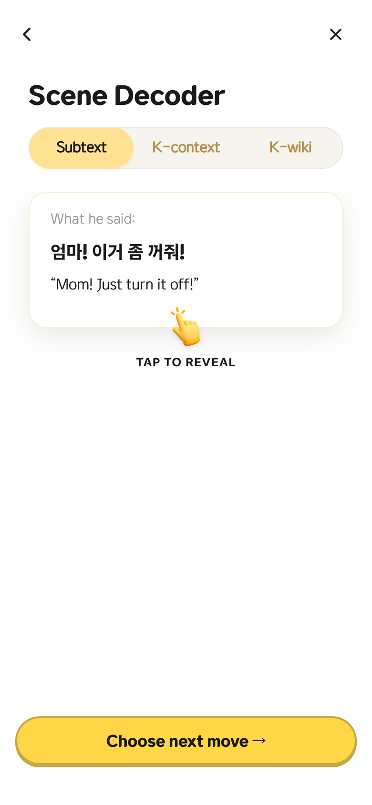
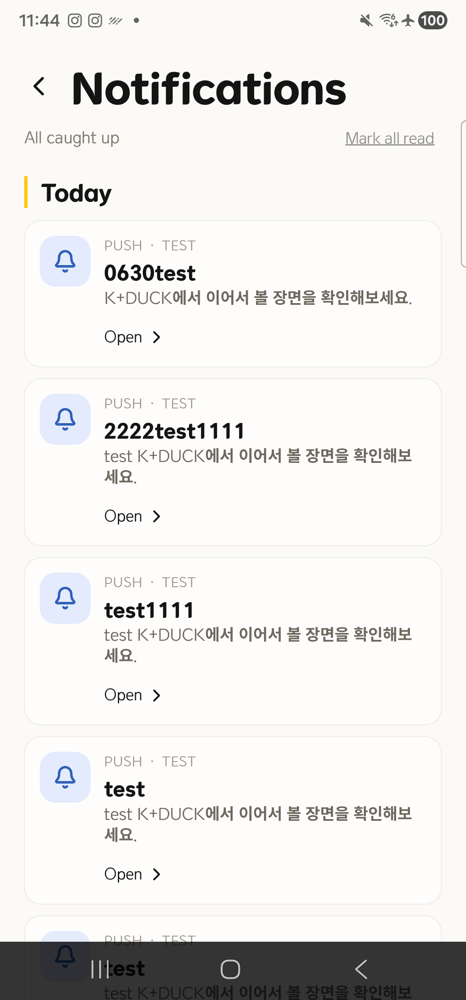
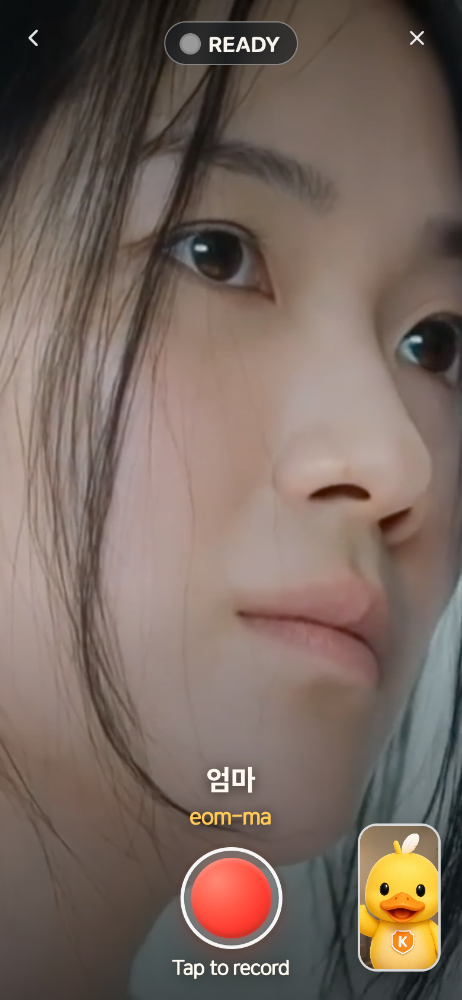
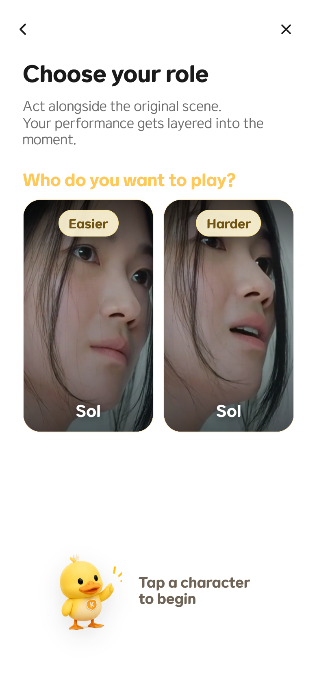
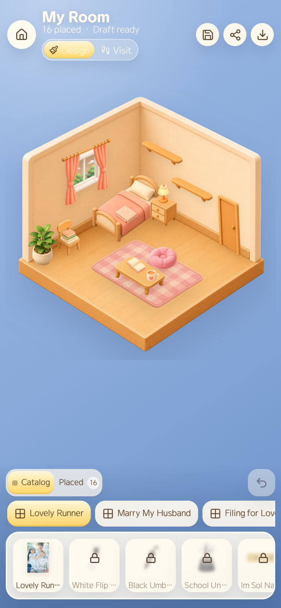

프로젝트를 한 문장으로 말하면
JinJJa-K는 K-drama 장면을 짧게 보고 넘기는 서비스가 아니라, 듣고 이해하고 다시 행동하게 만드는 장면 학습 제품이다. 사용자는 세로 영상을 보면서 한국어, 로마자, 영어 자막을 함께 보고, Decoder에서 숨은 의미와 문화 맥락을 확인한 뒤, 저장하거나 다음 장면으로 이동한다.
내가 맡은 일은 화면 몇 개를 붙이는 것이 아니라, 실험으로 시작한 MVP를 실제 서비스와 앱 릴리스 구조로 옮기는 일이었다. 그래서 이 프로젝트의 핵심은 기능 구현만큼이나 경계 정리, 런타임 안정화, QA 흐름에 있다.
내가 실제로 잡은 역할
제품 관점
사용자가 장면을 보고 끝내지 않도록 다음 행동을 만들었다. Decoder는 장면 이해를 깊게 만들고, My Room은 학습한 장면을 수집 경험으로 바꾼다. 알림과 저장, 공유는 다시 돌아올 이유를 만드는 쪽으로 정리했다.
개발 관점
React/Vite 화면, Cloudflare Pages Functions, D1 데이터 경계, WebView bridge, native Google Sign-In, Android permission, release signing까지 이어지는 흐름을 직접 다뤘다.
세 저장소를 거치며 제품이 달라진 방식
같은 제품을 세 번 만든 것이 아니다. MVP2에서는 학습 루프를 빠르게 검증했고, kduck-home에서는 운영 가능한 서비스로 경계를 다시 세웠고, kduck_react에서는 앱으로 설치되는 순간 필요한 네이티브 책임을 분리했다.
MVP2 kduck
장면 학습의 원형을 만든 단계. Scene Decoder, acting flow, 권한 요청, HLS 재생, 모바일 PWA 제약을 검증했다.
kduck-home
실험 코드를 운영 서비스로 분리한 단계. 독립 DB, analytics, admin, content runtime, My Room, push 흐름을 정리했다.
kduck_react
웹 제품을 Android 앱으로 감싼 단계. WebView 정책, Google 로그인, 알림 권한, 앱 이름, 서명, AAB 빌드까지 정리했다.
MVP2: 학습 루프의 뼈대를 만든 단계

장면을 해석하게 만드는 화면
Decoder는 단어 뜻만 보여주는 사전이 아니라, 장면 안의 감정과 문화 맥락을 풀어주는 화면으로 설계했다. Subtext, K-context, K-wiki를 나눠서 사용자가 “왜 이 대사가 중요한지”까지 이해하도록 만들었다.
권한 요청을 흐름 안에 넣었다
camera/mic 권한은 useEffect에서 몰래 요청하지 않고, 사용자의 명시적인 버튼 행동 안에서 처리하도록 정리했다.
Acting record를 상태머신으로 정리했다
ready, recording, stopped 상태를 한 화면에서 관리해 녹화 전후 UI가 흔들리지 않게 만들었다.
HLS 재생 경로를 분리했다
Safari는 native HLS, Android/Chrome 계열은 hls.js로 처리해 미디어 재생 실패 범위를 줄였다.
직접 URL 진입을 제어했다
scene 단계별 route gate를 두어 사용자가 잘못된 단계로 들어가도 흐름이 깨지지 않도록 했다.
kduck-home: 운영 가능한 웹 서비스로 다시 세운 단계
첫 화면은 바로 제품이어야 했다
landing 설명보다 실제 사용 경험이 먼저 보여야 했다. 그래서 첫 화면부터 세로 영상, 자막, Decoder 진입, 알림 상태가 보이게 구성했다. 사용자가 무엇을 하는 서비스인지 한 번에 알 수 있어야 했다.
분리한 것
- MVP2 DB와 kduck-home DB를 섞지 않음
- public app, admin app, push worker의 책임을 분리
- public media는 MVP2 origin에서 read-only로만 사용
좋아진 것
- 웹 릴리스와 앱 릴리스의 책임선이 명확해짐
- analytics/admin/push를 운영 기능으로 다룰 수 있게 됨
- 학습 행동을 My Room 수집 루프로 연결할 수 있게 됨
kduck_react: 앱으로 설치되는 순간 필요한 것들

웹을 그대로 담되, 앱의 책임은 앱이 맡는다
kduck_react는 kduck.net을 다시 구현하지 않는다. 대신 WebView 정책, 네이티브 로그인, 알림 권한, Android 뒤로가기, 앱 이름, release signing처럼 설치형 앱에서만 필요한 책임을 맡는다.
Google 로그인
WebView OAuth가 아니라 native Google Sign-In으로 idToken을 받고, /api/auth/google/native에서 웹 세션으로 교환했다.
알림 권한
권한 팝업이 떠 있을 때 WebView가 뒤에서 먼저 진행하지 않도록 startup gate를 뒀다.
뒤로가기
웹의 현재 탭/상태를 native shell에 알려 Android hardware back이 앱 종료로 튀지 않게 했다.
릴리스 준비
debug, release/upload, Play App Signing SHA-1을 나눠 OAuth client와 Firebase 설정을 맞췄다.
기술적으로 기억할 만한 결정들
1. 웹과 앱의 경계를 섞지 않았다
웹은 콘텐츠와 사용자 경험을 빠르게 바꿀 수 있어야 하고, 앱은 설치형 환경에서 필요한 권한과 OS 연동을 안정적으로 처리해야 했다. 그래서 WebView 안의 UI를 네이티브로 다시 만들지 않고, bridge와 정책만 앱에 남겼다.
2. 권한 팝업이 제품 흐름을 망치지 않게 했다
알림 권한 팝업이 뜬 동안 splash, autoplay, coach가 뒤에서 먼저 지나가면 사용자는 시작부터 맥락을 잃는다. 앱 시작 단계에서 기다려야 하는 상태를 분명히 잡고, 화면 레이어도 팝업이 위에 뜬 것처럼 보이게 정리했다.
3. 로그인 실패 원인을 서명 단위로 쪼갰다
Google 로그인은 코드만 봐서는 원인이 잘 안 보인다. debug build, sideload release, Play install의 SHA-1이 다르기 때문에 각각 OAuth client/Firebase 설정을 분리해서 맞췄다.
4. QA는 실제 설치 기준으로 봤다
local preview와 release install은 같은 결과를 보장하지 않는다. 그래서 연결된 Android 기기에 앱을 다시 설치하고, 권한 팝업, Google login, notification 화면, release artifact를 따로 확인했다.
화면으로 보는 결과물



출시 준비에서 확인한 것
이 프로젝트는 화면을 만드는 데서 끝나지 않았다. 앱 이름, 패키지명, OAuth client, SHA-1, Firebase, AAB 산출물, 실제 기기 설치까지 이어져야 “앱으로 낼 수 있는 상태”라고 볼 수 있었다.
이 프로젝트에서 보여주고 싶은 역량
제품의 모양을 코드 구조로 옮기는 능력
학습 루프, 운영 웹, 네이티브 앱을 같은 제품 안에서 연결하되 책임은 분리했다.
문제를 경계별로 나누는 능력
로그인 문제를 앱 코드, WebView 세션, OAuth client, 서명 SHA, Firebase 설정으로 나눠 확인했다.
실제 환경에서 끝까지 확인하는 습관
브라우저 캡처, 로컬 preview, 연결된 Android 기기, release artifact를 따로 확인했다.
사용자 흐름을 놓치지 않는 구현
권한 팝업, 뒤로가기, 알림, My Room처럼 작아 보이는 순간이 전체 경험을 망치지 않게 정리했다.